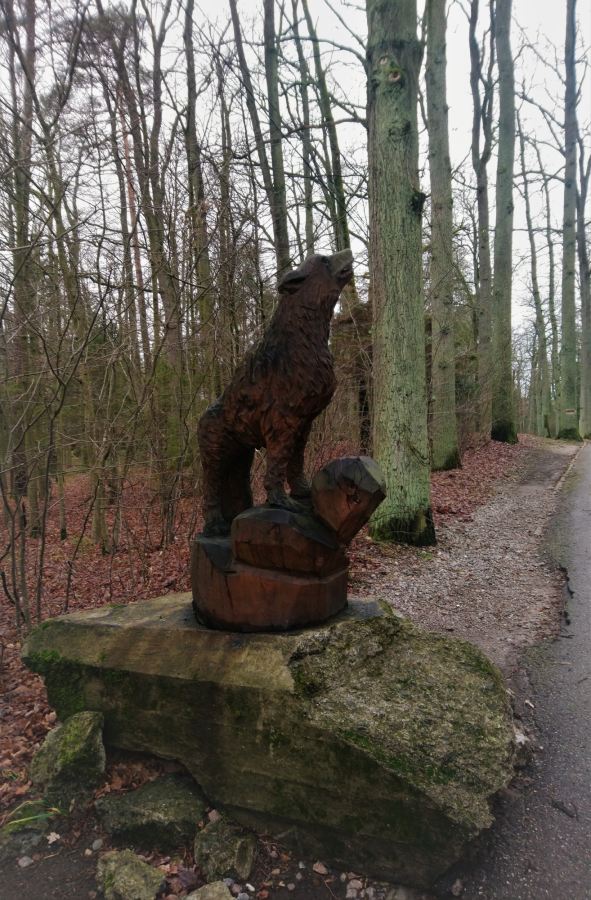
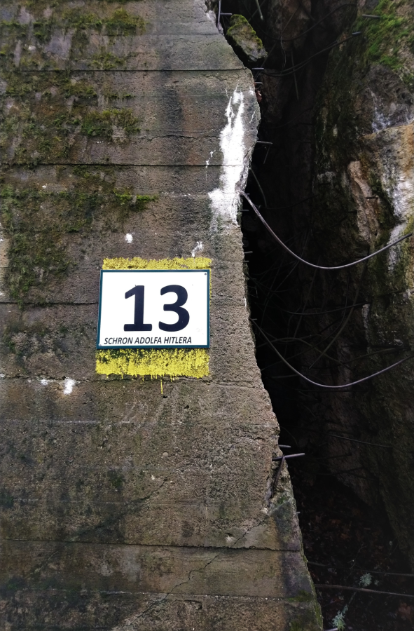

 Wilczy Szaniec zlokalizowany jest w lesie na skraju wsi Gierłoż, około 8 kilometrów od Kętrzyna. Wybór tego miejsca na główną kwaterę Adolfa Hitlera nie był przypadkowy, ponieważ gierłoski las znajdował się bardzo blisko granicy ze Związkiem Radzieckim, a z uwagi na „Plan Barbarossa”, który zakładał atak Trzeciej Rzeszy na ZSRR, dowódcy potrzebna była twierdza położona możliwie blisko wschodniego krańca Polski. Dodatkowy atut tego obszaru stanowiło ukształtowanie terenu. Gęste zadrzewienie skutecznie maskowało Wilczy Szaniec przed atakami z powietrza, a rozciągające się na wschód jeziora i liczne bagna tworzyły naturalną barierę dla wojsk lądowych. Decyzję o budowie nowej kwatery podjęto na przełomie sierpnia i września w 1940 roku i pierwotnie miało pracować przy niej blisko 50 tysięcy osób, lecz ostatecznie liczba ta wahała się od 3 do 5 tysięcy. Nazwę obiektu- Wolfsschanze- Hitler ustalił osobiście, wykorzystując swój pseudonim partyjny, którym był „Wolf” czyli wilk.
Budowa Wilczego Szańca oficjalnie nigdy nie została ukończona. W pierwszym etapie, czyli w latach 1940-1941, na całość kompleksu składało się kilka betonowych bunkrów, drewniane baraki i schrony dla głównych dowódców Trzeciej Rzeszy. Budynki miały charakter tymczasowy, ponieważ zakładano, że atak na ZSRR potrwa trzy miesiące, a Wilczy Szaniec budowano w celu wykonania „Planu Barbarossa”. W tym czasie powstała również bocznica kolejowa oraz lotnisko polowe.
Wojna ze Związkiem Radzieckim nie trwała jednak tak krótko jak zakładano, a co za tym idzie stopniowo zwiększała się liczba żołnierzy przebywających w kwaterze. Wilczy Szaniec trzeba było rozbudować o kolejne bunkry i baraki mieszkalne dla wojska. W latach 1942- 1944 budowano kolejne schrony, ale były to już znacznie większe konstrukcje niż te powstałe w początkowej fazie budowy. W tamtym czasie pojawił się również podział obiektu na trzy strefy bezpieczeństwa. W pierwszej, największej strefie znajdowały się schrony najważniejszych osobistości Rzeszy. Była ona przeznaczona wyłącznie do użytku Adolfa Hitlera i jego najbliższego otoczenia, a poruszanie się po niej było możliwe wyłącznie za okazaniem specjalnych przepustek. Obiekty sztabowe Wermachtu, kwatery wojsk lotniczych, marynarki wojennej, ministerstwa spraw zagranicznych oraz komendanta wybudowano w drugim sektorze Wilczego Szańca. Pojawiły się tam także miejsca mające poprawić komfort życia mieszkańców, takie jak kino, kasyno czy sauna. Trzecia strefa otaczała dwie pozostałe i znajdowały się tam głównie baraki mieszkalne żołnierzy.
Kwatera zajmowała ogromny obszar- około 250 hektarów, a wzdłuż jej granic rozciągały się zasieki z drutu kolczastego oraz pola minowe. Ukrywanie tak dużego obiektu przed wrogimi wojskami nie było łatwym zadaniem. Podczas budowy starano się zachować jak najwięcej drzewostanu, ponieważ tworzył on naturalną zasłonę przed atakami z powietrza. Dodatkowo wyspecjalizowana firma ogrodnicza zajęła się obsadzaniem dachów kwater różnymi krzewami i młodymi drzewami, co sprawiło, że Wilczy Szaniec z lotu ptaka był praktycznie nie do wykrycia. Ściany budynków pokrywano mieszanką trawy oraz zielonego barwnika. Po dodaniu jej do zaprawy i naniesieniu na budynki skutecznie maskowała oraz nadawała naturalnie wyglądającej faktury ceglanym i betonowym konstrukcjom. Na krawędziach dachów budowli mocowano grube, metalowe uchwyty, na których później wieszano siatki maskujące- były one wszechobecne na terenie kwatery, ponieważ pokryte nimi były również wszystkie szlaki komunikacyjne prowadzące do Wilczego Szańca. Wódz Rzeszy wiedział, że jego siedziba jest bardzo dobrze maskowana, a mimo to, cyklicznie kazał przeprowadzać loty kontrolne, podczas których wykonywano zdjęcia całego obiektu. Wykrywano dzięki nim wszelkie mankamenty kamuflażu, które natychmiast poprawiano, by zminimalizować ryzyko wykorzystania ich przez wroga.
 Adolf Hitler przyjechał do Wilczego Szańca 24 czerwca 1941 roku i zamieszkał w ogromnym, betonowym bunkrze. W porównaniu z jego innymi siedzibami, kwatera w Gierłoży była urządzona dość skromnie. Pomieszczenia były stosunkowo małe i wyposażone tylko w najpotrzebniejsze rzeczy, takie jak drewniane szafy, regały na dokumenty, stół i krzesła, a w sypialni stało jedynie łóżko polowe i taborety. Ściany pomalowane były na biało lub wyłożone drewnem, a na podłodze, w zależności od pomieszczenia, znajdował się parkiet albo dywan. Obiekty mieszkalne pracowników Wilczego Szańca wyglądały bardzo podobnie. Małe, ciasne pokoje wykończone drewnem, w których znajdowały się wyłącznie najpotrzebniejsze przedmioty.
Życie codzienne w gierłoskiej kwaterze przeważnie kręciło się wokół narad wojennych, które trwały od południa do późnego wieczora, z przerwami jedynie na obiad i kolację. Swój dzień Hitler zaczynał od śniadania i przyjmowania meldunków z frontów, a następnie wybierał się na spacer ze swoim owczarkiem niemieckim, podczas którego nie wolno mu było przeszkadzać. Po powrocie zwykle przeglądał pocztę z Berlina dostarczaną każdego dnia przez pociągi lub samoloty kurierskie. Dalszą cześć dnia zajmowały narady i spotkania z dowódcami oraz oficerami niemieckiego wojska. W Wilczym Szańcu Hitler spędził około 800 dni a jego najdłuższa wizyta trwała od czerwca 1941 do lipca 1942 roku. Po tym czasie Austriak odwiedzał jeszcze swoją kwaterę, ale były to tylko kilkudniowe pobyty. 20 listopada 1944 roku opuścił on Gierłoż na zawsze.
Niedługo po wyjeździe Adolfa Hitlera z Wilczego Szańca kwatera została niemal całkowicie zniszczona. W nocy z 24 na 25 stycznia 1945 roku, kiedy Armia Czerwona zajęła Węgorzewo, wykonano rozkaz o wysadzeniu gierłoskiej siedziby. Jednak ze względu na ogrom i solidność budynków oraz brak wystarczającej ilości materiałów wybuchowych saperom nie udało się zniszczyć wszystkich obiektów kwatery, dlatego niektóre z nich do dzisiaj możemy zobaczyć na terenie muzeum Wilczego Szańca w Gierłoży.
{kind=link}
{kind=link}